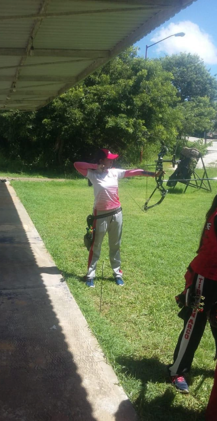

Tiro con Arco

Entrevista completa Giselle May Mukul
Mónica Canto Canto, actualmente estudiante de derecho. A partir de los 18 años logró cumplir su sueño de ser tiradora de arco y no solo fue a nivel local, llegó hasta la regional. Su primera regional fue en el estado de Mérida, Yucatán donde logró quedar en cuarto lugar; pudo estar en el Grand Prix en un torneo en Cancún, donde estuvieron todos los arqueros e incluso los más famosos. Hoy comparte con nosotros su experiencia y logros que obtuvo como arquera.
¿Por qué decidiste el deporte Tiro con Arco?
Porque fue un deporte que anhelaba practicar. Era como un sueño que tenía que cumplir y lo logré, con la ayuda de mis seres queridos.
¿En algún momento decidiste dejar tu deporte por alguna circunstancia?
Sí. De hecho este año decidí dejar mi deporte, por cuestiones académicas. Quiero dedicar más tiempo a mi carrera , estudió derecho. Pero una vez concluida mi escuela pretendo regresar.
¿Tuviste burla de personas o te llegaron a decir que no ibas a poder?
Afortunadamente no. Cada persona de mí alrededor me demostró su apoyo, principalmente mis papás, nunca me dejaron sola, en todo momento estuvieron conmigo.
¿Quién te motivo para que practiques tiro con arco?
Mis motivaciones fueron mis papás. Pero fue más el entusiasmo de viajar a diferentes lugares y por supuesto conocer a mi arquera favorita.
¿Lograste conocer a tu arquera favorita; quien era?
Afortunadamente sí logré conocerla, era un sueño que tenía que lograr y lo logre. Es Aida Román.
¿Volverías a retomar tu deporte?
Sí; he pensado en retomarlo de nuevo, pero no en estos momentos, sería después que termine mi carrera.
¿Qué lugares has conocido gracias a tu deporte?
Cuando tuve mi primer regional fue en Mérida Yucatán, en el campo de tiro “Kukulcam”; Cancún fue prácticamente un torneo donde bajaron todos los arqueros e incluso los más famosos; el último viaje que hice fue a México, donde también fue un torneo que realizó el comité olímpico.